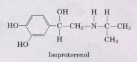
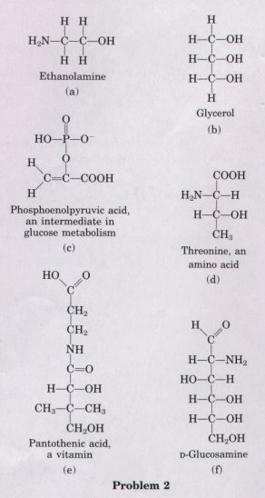
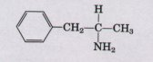
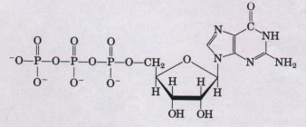
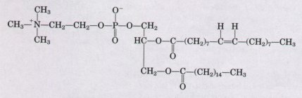
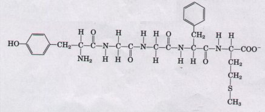

Most of the dry weight of living organisms consists of organic compounds, molecules containing covalently bonded carbon backbones to which other carbon, hydrogen, oxygen, or nitrogen atoms may be attached. Carbon appears to have been selected in the course of biological evolution because of the ability of carbon atoms to form single and double bonds with each other, making possible formation of linear, cyclic, and branched backbone structures in great variety. To these backbones are attached different kinds of functional groups, which determine the chemical properties of the molecules. Organic biomolecules also have characteristic shapes (configurations and conformations) in three dimensions. Many biomolecules occur in asymmetric or chiral forms called enantiomers, stereoisomers that are nonsuperimposable mirror images of each other. Usually, only one of a pair of enantiomers has biological activity.
The strength of covalent chemical bonds, measured in joules, depends on the electronegativities and sizes of the atoms that share electrons. The enthalpy change (OH) for a chemical reaction reflects the number and kind of bonds made and broken. For endothermic reactions, OH is positive; for exothermic reactions, negative. The many different chemical reactions that occur within a cell fall into five general categories: group transfers, oxidation reduction reactions, rearrangements of the bonds around carbon atoms, breakage or formation of carbon-carbon bonds, and condensations.
Most of the organic matter in living cells consists of macromolecules: nucleic acids, proteins, and polysaccharides. Each type of macromolecule is composed of small, covalently linked monomeric subunits of relatively few kinds. Proteins are polymers of 20 different kinds of amino acids, nucleic acids are polymers of different nucleotide units (four in DNA, four in RNA), and polysaccharides are polymers of recurring sugar units. Nucleic acids and proteins are informational macromolecules; the characteristic sequences of their subunits constitute the genetic individuality of a species. Simple polysaccharides act as structural components, but some complex polysaccharides also are informational macromolecules.
There is a structural hierarchy in the molecular organization of cells. Cells contain organelles, such as nuclei, mitochondria, and chloroplasts, which in turn contain supramolecular complexes, such as membranes and ribosomes, and these consist in turn of clusters of macromolecules that are bound together by many relatively weak, noncovalent
forces. The macromolecules consist of covalently linked subunits. The formation of macromolecules from simple subunits creates order (decreases entropy); this synthesis requires energy and therefore must be coupled to exergonic reactions.
The small biomolecules such as amino acids and sugars probably first arose spontaneously from atmospheric gases and water under the influence of electrical energy (lightning) during the early history of the earth. Such processes, called chemical evolution, can be simulated in the laboratory. The monomeric subunits of cellular macromolecules appear to have been selected during early biological evolution as being the most fit for their biological functions. These subunit molecules are relatively few in number, but are very versatile; evolution has combined small biomolecules to yield macromolecules capable of diverse biological functions. The first macromolecules may have been RNA molecules that were capable of catalyzing their own replication. Later in evolution, DNA took over the function of storing genetic information, proteins became the cellular catalysts, and RNA mediated between these, allowing the expression of genetic information as proteins.
General
Baker, J.J. & Allen, G.E. (1981) Matter, Energy, and Life: An Introduction to Chemical Concepts, 4th edn, Addison-Wesley Publishing Co., Inc., Reading, MA.
Callewaert, D.M. & Genyea, J. (1980> Basic Chemistry: General, Organic, Biological, Worth Publishers, Inc., New York.
Dickerson, R.E. & Geis, I. (1976) Chemistry, Matter, and the Uniuerse, The Benjamin/Cummings Publishing Company, Menlo Park, CA.
Frieden, E. (1972) The chemical elements of life. Sci. Arn. 227 (July), 52-61.
The Molecules of Life. (1985) Sci. Am. 253 (October).
An entire issue deuoted to the structure and funetion of biomolecules. It includes articles on DNA, RNA, and proteins, and their subunits.
Chemistry and Stereochemistry
Brewster, J.H. (1986) Stereochemistry and the origins of life. J. Chem. Educ. 8, 667-670.
Art, interesting and lucid discussion. of the ways in which euolution could haue selected only orze of two .stereoisorrzers for the construction. of proteins and other molecules.
Hegstrom, R.A. & Kondepudi, D.K. ( 1990 ) The handedness of' the universe. Sci. Anz. 262 (January), 108-115.
Stereochemistry and the a.symnzetry of biomolecules, uiewed in tlte context of the unioerse.
Loudon, M. (19881 Orgarzic Clterrt.istry, 2nd edn, The Benjamin/Cummings Publishing Company, Menlo Park, CA.
This and the followirtg two boolrs prouide details on stereochemistry and the ch.enti.eal reactiuity of fun.etional groups. All excellent textbooh.s.
Morrison, R.T. & Boyd, R.N. (1992) Organic Chemistry, 6th edn, Allyn & Bacon, Ine., Boston, MA.
Streitweiser, A. Jr. & Heathcock, C.H. ( 19811 Introduction to Organic Ch.enz.istry, 2nd edn, Macmillan Publishing Co., Inc., New York.
Prebiotic Evolution
Cavalier-Smith, T. (1987> The origin of cells: a symbiosis between genes, catalysts, and membranes. Cold Spring Harb. Symp. Quant. Biol. 52, 805-824.
Darnell, J.E. & Doolittle, W.F. (1986) Speculations on the early course of evolution. Proc. Natl. Acad. Sci. LISA 83, 1271-1275.
A clear statement of the RNA world scenario.
Evolution ot' Catalytic Function. (1987) Cold Sprirzg Harb. Symp. Quant. Biol. 52.
A collection of almost 100 articles on all aspects of prehiotic an.ct eccrly biological evolution; probably the sirzgle best source on molecular eoolution.
Ferris, J.P. (1984) The chemistry of life's origin. Chem. Eng. Neu,,s 62, 21-35.
A short, clear description. of the experirrtental evidence for the synthesis of bionzolecules under prebiotic conditions.
Horgan, J. ( 1991 ) In the beginning . . . Sci. Am. 264 (February), 116-125.
A brief, clear statement of current theorie.s regarding prebiotic evolution.
Miller, S.L. (1987) Which organic compounds could have occurred on the prebiotic earth? Cold Spring Harb. Symp. Quant. Biol. 52, 17-27.
Schopf, J.W. (ed) (1983) Earths Earliest Biosphere, Princeton University Press, Princeton, NJ. A comprehensive discussu~n of geologic history and its relation to the deuelopment of Life.
| 1. Vitarnin C: Is the Synthetic Vitarnin
as Good as the Natural One? One claim put forth by
purveyors of health foods is that vitamins obtained from
natural sources are more healthful than those obtained by
chemical synthesis. For example, it is claimed that pure
L-ascorbic acid (vitamin C) obtained from rose hips is
better for you than pure I.-ascorbic acid manufactured in
a chemical plant. Are the vitamins from t.he two sources
different? Can the body distinguish a vitamin's source? 2. Identification of Functional Groups Figure 3-5 shows the common functional groups of biomolecules. Since the properties and biological activities of biomolecules are largely determined by their functional groups, it is important to be able to identify them. In each of the molecules at right, identif;y the constituent functional groups.  3. Drug Activity and Stereochernistry The quantitative differences in biological activity between the two enantiomers of a compound are sometimes quite large. For example, the D-isomer of the drug isoproterenol, used to treat mild asthma, is 50 to 80 times more effective as a bronchodilator than the L-isomer. Identify the chiral center in isoprotercnol. Why would the two enantiomers have such radically different bioactivity? |
 |
4. Drug Action nnd Shape of Molecules Some years ago two drug companies marketed a drug under the trade names Dexedrine and Benzedrine. The structure of the drug is shown below.

The physical properties (C, H, and N analysis, melting point, solubility, etc.) of Dexedrine and Benzedrine were identical. The recommended oral dosage of Dexedrine (which is still available) was 5 mg/d, but the recommended dosage of Benzedrine was significantly higher. Apparently it required considerably more Benzedrine than Dexedrine to yield the same physiological response. Explain this apparent contradiction.
5. Components of Complex Biomolecules Figure 3-16 shows the structures of the major components of complex biomolecules. For each of the three important biomolecules below (shown in their ionized forms at physiological pH), identify the constituents.
(a) Guanosine triphosphate (GTP), an energyrich nucleotide that serves as precursor to RNA:

(b) Phosphatidylcholine, a component of many membranes:

(c) Methionine enkephalin, the brain's own opiate:

6. Determination of the Structure of a Biomolecule An unknown substance, X, was isolated from rabbit muscle. The structure of X was determined from the following observations and experiments. Qualitative analysis showed that X was composed entirely of C, H, and O. A weighed sample of X was completely oxidized, and the amount of H2O and CO2 produced was measured. From this quantitative analysis, it was concluded that X contains 40.00% C, 6.71% H, and 53.29% O by weight. The molecular mass of X was determined by a mass spectrometer and found to be 90.00. An infrared spectrum of X showed that it contained one double bond. X dissolved readily in water to give an acidic solution. A solution of X was tested in a polarimeter and demonstrated optical activity.
(a) Determine the empirical and molecular formula of X.
(b) Draw the possible structures of X that fit the molecular formula and contain one double bond. Consider only linear or branched structures and disregard cyclic structures. Note that oxygen makes very poor bonds to itself.
(c) What is the structural significance of the observed optical activity? Which structures in (b) does this observation eliminate? Which structures are consistent with the observation?
(d) What is the structural significance of the observation that a solution of X was acidic? Which structures in (b) are now eliminated? Which structures are consistent with the observation?
(e) What is the structure of X? Is more than one structure consistent with all the data?